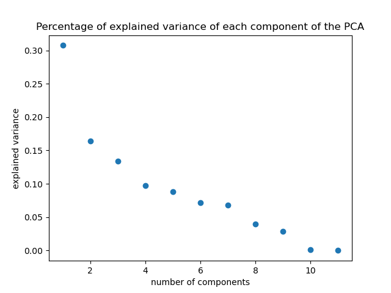

In the vast expanse of digital information, Wikipedia remains the greaetst collection of human knowledge
This is the story of a regular guy named Bob.
Bob is playing a little game called Wikispeedia
Wikispeedia is an online game where players have to reach a Wikipedia article from another, unrelated Wikipedia article,
only by clicking links in the articles encountered.
A condensed version of Wikipedia (4,604 articles) is used. Beyond mere entertainment, Wikispeedia unveils a world where games meet semantics,
and unravels the intricate web of connections that bind Wikipedia's articles together.
But what makes Bob either good or bad at this game?
What strategies does Bob intuitively use to play Wikispeedia successfully? All in all, is Bob a good player?

Answering these questions leads to an exploration of gameplay patterns, through analysing human navigation paths.
Analysing player strategies in the Wikispeedia game and assessing correlations with semantic content.
Extracting features from player path data will allow for unravelling and analysing of the different strategies used by the players.
We have quantitatively described in-game behaviours by newly derived features and assessed how these variables relate to semantic content.
understanding the intricate nuances of interconnected information.
Let's have a look at the feature distribution
We can see that the features in the first column are very heavy tailed, for this reason we will apply a log transform to them.
Taking the log of backtrack (2nd row first column) does not help (probably as it is discrete and has only a few different values).
We will then normalize the features:
- We use z-score normalization
- NaN values in certain features are replaced by the mean
PCA and Correlation
PCA

We will keep only the 7 first dimensions as they explain most of the variance compared to further components.
Correlation

From this plot, we may notice some noteworthy correlations:
- Time-related features (duration, average_time_on_page, coarse_mean_time) are correlated with each other, which is expected.
- Path length and ratio are correlated with each other, which makes sense as the ratio is the path length divided by the number of pages in the path.